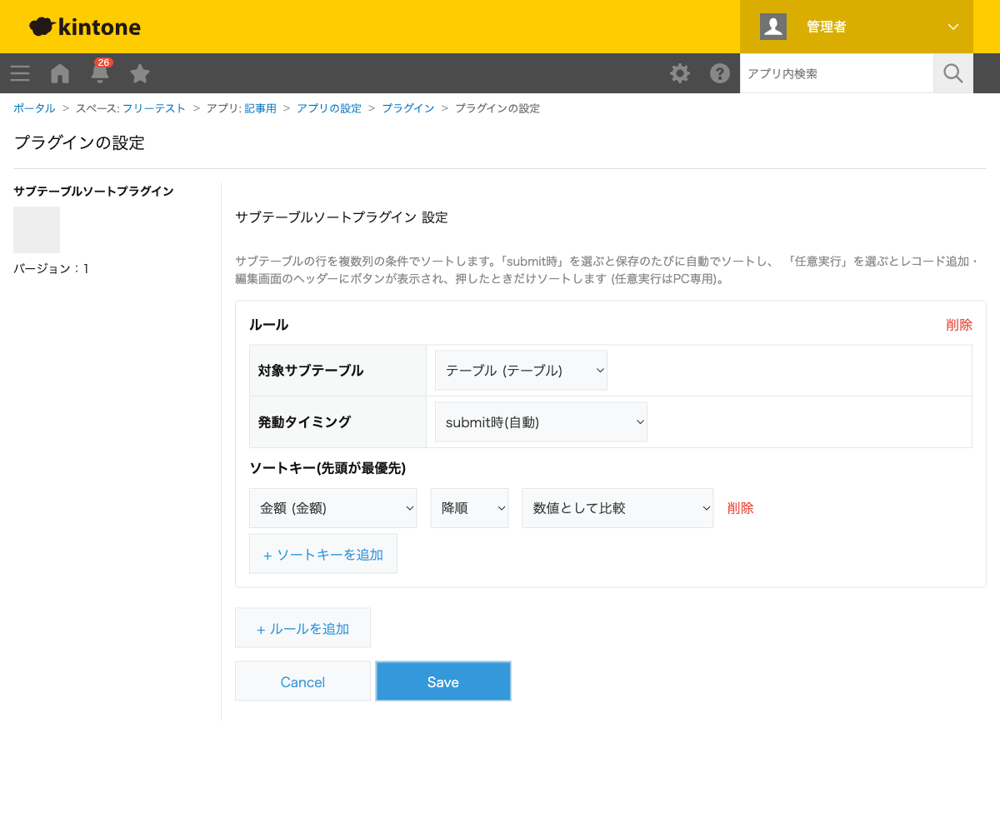
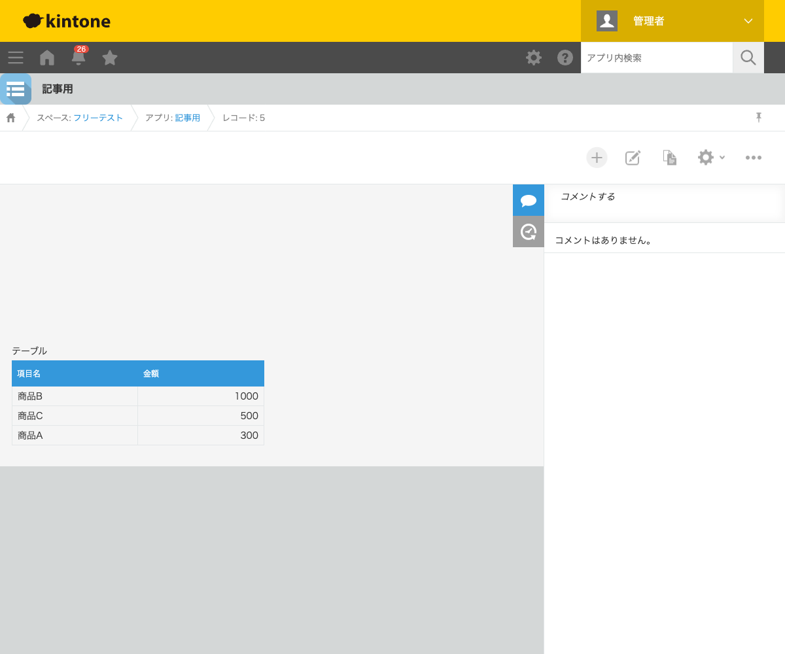

GovAppsプラグイン 安全性を確認できる無料kintoneプラグイン集
見積書アプリなどで、サブテーブルに明細行を入力した順ではなく、金額の大きい順・日付順に 並べ替えて表示したい場面があります。この記事では、レコード保存時に自動でサブテーブルの 行を並び替える方法を、実際の並び替え結果つきで解説します。
kintone標準のサブテーブルには、行を手動でドラッグして並び替える機能はありますが、 「金額が大きい順に自動で並べる」「保存するたびに自動整列する」という機能はありません。 行数が多いフォームで毎回手作業で並び替えるのは非効率です。
| 方法 | 向いている場合 | 注意点 |
|---|---|---|
| JavaScriptを自作する | 社内に開発者がいて、複雑な並び替え条件が必要な場合 | 保存イベントでのソート処理・複数列の優先順位付けロジックを自前で実装・保守する必要がある |
| 有料の他社プラグイン | 予算があり、サポートを重視する場合 | 月額課金が発生する。ソースコードが非公開で処理内容を確認しにくい |
| GovAppsプラグイン(このプラグイン) | 無料で、複数列・複数ルールの並び替えを試したい場合 | 並び替えの対象は1つのサブテーブルにつき複数ルール設定可能(ソートキーは複数列の優先順位付けに対応) |
サブテーブルソートプラグインは無料・広告なしで、 ソースコードをGitHubで全公開 しています。並び替え処理はブラウザ内のJavaScriptだけで完結し、外部サーバーへの通信は一切ありません。
サブテーブルソートプラグインは、対象のサブテーブル・ 発動タイミング・ソートキー(並び替えの基準にする列)を設定するだけで使えます。

サブテーブルに「商品A(300円)」「商品B(1000円)」「商品C(500円)」の順で行を入力して保存すると、 保存後は「商品B(1000)→商品C(500)→商品A(300)」の金額降順に自動的に並び替わります。
